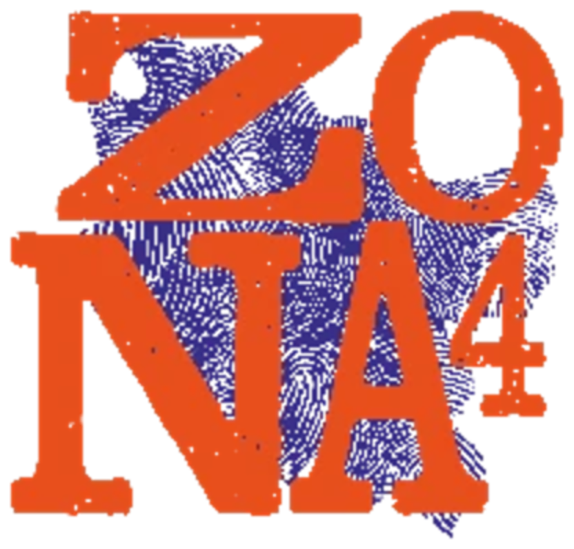

foco.informaticos.ar
foco.informaticos.ar
Ciberseguridad en municipios
Experiencias de gestión digital en municipios de la Provincia de Buenos Aires.
foco.informaticos.ar
Colonialismo digital
¿Quién controla las tecnologías de las que depende el Estado? A partir de casos locales e internacionales, exploraremos el concepto de colonialismo digital y los mecanismos mediante los cuales el control de infraestructura, plataformas y software puede generar relaciones de subordinación y limitar la autonomía de las instituciones públicas.
foco.informaticos.ar
Desarrollar videojuegos en Argentina
Espacio de encuentro entre diversas comunidades dedicadas a los videojuegos en nuestro país.

foco.informaticos.ar
La belleza de lo roto
Una invitación a reflexionar sobre el descarte tecnológico, el reciclaje y la obsolescencia programada, cuestionando nuestra relación con los objetos que consumimos y desechamos.
foco.informaticos.ar
Muy lindo el dashboard… ¿y ahora qué hago con esto?
En esta charla vamos a explorar algunos errores frecuentes en proyectos tecnológicos: requerimientos mal definidos, objetivos poco claros, soluciones diseñadas sin suficiente conocimiento de las personas usuarias y equipos que no incorporan todas las perspectivas necesarias.

foco.informaticos.ar
Reconstruyendo la memoria colectiva mediante ciencia de datos
La charla mostrará cómo se integran datos de sitios web, bases de datos y texto plano en un grafo de conocimiento. Con él se pueden resolver identidades, establecer circuitos represivos y estimar la probabilidad de que una persona haya estado en un centro clandestino.